Microsoft SQL Server User’s Guide
Contents
Microsoft SQL Server User’s Guide#
Introduction#
Aurreum Data Protection Suite (ADPS) provides the capability for the backup and restore of SQL Server databases. This guide introduces how to install the ADPS agent and use ADPS to back up and restore SQL Server databases.
Features#
Feature |
Description |
|---|---|
Backup source |
Database (single, multiple) |
Backup type |
Full backup: Back up all the data of one or more databases and enough logs to restore those data. |
Backup target |
Standard storage pool, de-duplication storage pool, database synthetic pool, local storage pool, tape library pool, object storage service pool, LAN-Free pool |
Backup compression |
None, fast, tunable |
Backup channels |
Physical backup supports 1 to 64 channels. Synthetic backup supports 1 to 255 channels. |
Backup schedule |
Immediate, one-time, minutely, hourly, daily, weekly, monthly |
Restore type |
Media restore: Restore one or more data files of a database to the latest state. |
Restore location |
Original path, specified path |
Restore target |
Overwrite the source database, create a new database |
Restore granularity |
Entire database (single, multiple), data file (single, multiple) |
Restore to different hosts |
Restoring to a different host with the same version as the source host or from an old version to a new version is supported. |
Pre/Post action |
The pre action is executed after the job starts and before the resource is backed up or restored. The post action is executed after the resource is backed up or restored. |
Speed limit |
The data transfer speed or disk read and write speed can be limited. |
Reconnection time |
The job continues after the abnormal reset occurs in the network within the set time. The default value is 10 minutes. |
Stop jobs |
Backup and restore jobs can be stopped. |
Storage pool replication |
SQL Server backup sets support storage pool replication. |
Restore from target pool |
Restoring backup sets from the target storage pool is supported. |
D2C |
Data can be backed up directly to object storage services. |
D2T |
Data can be backed up directly to tape libraries. |
Failover cluster |
The backup and restore of failover clusters are supported. |
Always On availability groups |
The backup and restore of Always On availability groups are supported. |
Always On failover cluster |
The backup and restore of Always On failover clusters are supported. |
Modify the backup source and target |
Modifying a job’s backup source and backup target is supported. |
IPv6 |
Data transfer and management over IPv6 network are supported. |
Access Key login |
Windows SQL Server single host supports login with Access Key. |
Install and Configure Agent#
Verify Compatibility#
Before you install the ADPS agent, check whether your environment is supported. ADPS supports the backup and restore for SQL Server standalone, failover cluster, Always On Availability Groups (AGs), and Always On failover cluster instances (FCIs).
Standalone#
Database Version |
Database Bits |
OS |
CPU Architecture |
OS Bits |
|---|---|---|---|---|
2000 RTM |
32 |
Windows 2003 |
x86 |
64 |
2000 SP3 |
32 |
Windows 2003 |
x86 |
64 |
2000 SP4 |
32 |
Windows 2000 |
x86 |
64 |
2000 SP4 |
32 |
Windows 2003 |
x86 |
64 |
2000 SP4 |
32 |
Windows 2003 SP2 |
x86 |
64 |
2000 SP4 |
32 |
Windows 2008 |
x86 |
64 |
2005 |
32 |
Windows 2003 |
x86 |
32 |
2005 |
32 |
Windows 2003 |
x86 |
64 |
2005 |
64 |
Windows 2003 R2 SP2 |
x86 |
64 |
2005 |
64 |
Windows 2008 R2 SP1 |
x86 |
64 |
2008 |
32 |
Windows 2003 |
x86 |
32 |
2008 |
32 |
Windows 2003 |
x86 |
64 |
2008 |
32 |
Windows 2008 |
x86 |
64 |
2008 |
32 |
Windows 2008 R2 |
x86 |
64 |
2008 |
64 |
Windows 2008 R2 SP1 |
x86 |
64 |
2008 |
64 |
Windows 2003 |
x86 |
64 |
2008 R2 |
64 |
Windows 2003 |
x86 |
64 |
2008 R2 |
64 |
Windows 2008 |
x86 |
64 |
2008 R2 |
64 |
Windows 2008 R2 |
x86 |
64 |
2012 |
32 |
Windows 2012 RC |
x86 |
64 |
2012 |
64 |
Windows 2012 RC |
x86 |
64 |
2012 |
64 |
Windows 2008 R2 SP1 |
x86 |
64 |
2014 |
64 |
Windows 2008 R2 SP1 |
x86 |
64 |
2014 |
64 |
Windows 2012 RC |
x86 |
64 |
2016 (RTM) |
64 |
Windows 2012 R2 |
x86 |
64 |
2017 |
64 |
Windows 2012 |
x86 |
64 |
2008 R2 |
64 |
Windows 2016 |
x86 |
64 |
2012 |
64 |
Windows 2016 |
x86 |
64 |
2014 |
64 |
Windows 2016 |
x86 |
64 |
2017 |
64 |
Windows 2016 |
x86 |
64 |
2019 |
64 |
Windows 2016 |
x86 |
64 |
2019 |
64 |
Red Hat 8 |
x86 |
64 |
Failover Cluster#
Database Version |
Database Bits |
OS |
CPU Architecture |
OS Bits |
|---|---|---|---|---|
2008 R2 |
64 |
Windows 2008 R2 |
x86 |
64 |
2005 SP3 |
64 |
Windows 2003 R2 |
x86 |
64 |
2012 |
64 |
Windows 2012 R2 |
x86 |
64 |
2016 |
64 |
Windows 2012 R2 |
x86 |
64 |
2017 |
64 |
Windows 2016 |
x86 |
64 |
2019 |
64 |
Windows 2016 |
x86 |
64 |
Always On Availability Groups#
Database Version |
Database Bits |
OS |
CPU Architecture |
OS Bits |
Note |
|---|---|---|---|---|---|
2012 |
64 |
Windows 2012 R2 |
x86 |
64 |
Two nodes |
2016 |
64 |
Windows 2012 R2 |
x86 |
64 |
Three nodes |
2017 |
64 |
Windows 2012 R2 |
x86 |
64 |
Two nodes |
2017 |
64 |
Windows 2016 |
x86 |
64 |
Three nodes |
2019 |
64 |
CentOS 7.5 |
x86 |
64 |
Three nodes |
2019 |
64 |
Windows 2016 |
x86 |
64 |
Two nodes |
Always On Failover Cluster Instances#
Database Version |
Database Bits |
OS |
CPU Architecture |
OS Bits |
Note |
|---|---|---|---|---|---|
2017 |
64 |
Windows 2016 |
x86 |
64 |
Three nodes |
2019 |
64 |
Windows 2016 |
x86 |
64 |
Three nodes |
Install ADPS Agent#
ADPS supports the backup and restore for SQL Server on Windows and Linux.
Install Agent on Windows#
Log in to the ADPS console as a user with the administrator privileges.
Open Resource from the side bar, and click the Install Agent icon. The Install agent window appears.
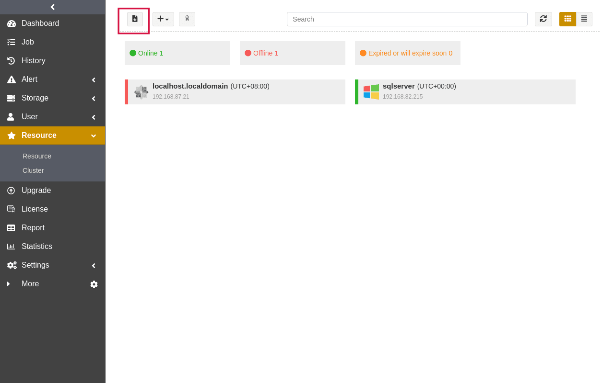
In the Install agent window, select Windows and click Download Windows agent to download the package.

Copy the package to the Windows host.
Log in to the Windows host as a user with the administrator privileges.
Double-click the package to launch the setup wizard. Click Next.
Select Microsoft SQL Server from the Component list and click Next.
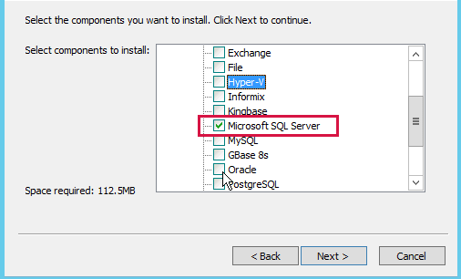
Enter the information of the backup server. Click Next.
Backup Server Host: Enter the IP or domain name of the backup server.
Backup Server Port: The default port is 50305. To use SSL connection, enable Use SSL secure connection and set the port to 60305.
Access Key: This field is optional. When the backup server is a multi-tenant system, the agent must be configured with the access key of a tenant.
To get the access key of a tenant: Log in to the console as a tenant, click Personal Settings in the upper right corner, select Account Settings, In the Preferences tab click View to get the Access Key of the tenant.

Confirm the Destination Folder or specify another folder for the installation. Click Next.
Wait for the installation to complete.
Install Agent on Linux#
For Linux, ADPS allows users to directly download the packages from the backup server and execute the installation command over the Internet.
Log in to the ADPS console as a user with the administrator privileges.
Open Resource from the sidebar and click the Install Agent icon. The Install agent window appears.
In the Install agent window, select Linux from the list of operating systems and SQL Server from the module list. The curl and wget installation commands appear.
Note: To delete the package downloaded to the Linux server automatically after the installation, select the Remove installation package check box.
Copy the curl or wget command.
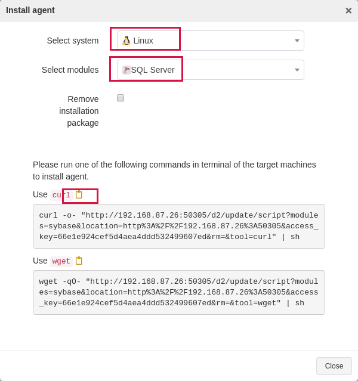
Log in to the Linux server as a root user. Paste the copied command in the terminal and press Enter to execute the installation.
[root@localhost ~]# curl -o- "http://192.168.20.85:50305/d2/update/script?modules=mssql&location=http%3A%2F%2F192.168.20.85%3A50305&access_key=2042288d749dba47e963d1ab09a6472b&rm=&tool=curl" | sh % Total % Received % Xferd Average Speed Time Time Time Current Dload Upload Total Spent Left Speed 100 7905 0 7905 0 0 23844 0 --:--:-- --:--:-- --:--:-- 44661 % Total % Received % Xferd Average Speed Time Time Time Current Dload Upload Total Spent Left Speed 0 0 0 0 0 0 0 0 --:--:-- --:--:-- --:--:-- 0 100 58.7M 100 58.7M 0 0 1804k 0 0:00:33 0:00:33 --:--:-- 4859k % Total % Received % Xferd Average Speed Time Time Time Current Dload Upload Total Spent Left Speed 0 0 0 0 0 0 0 0 --:--:-- --:--:-- --:--:-- 0 100 6728k 100 6728k 0 0 1900k 0 0:00:03 0:00:03 --:--:-- 1874k % Total % Received % Xferd Average Speed Time Time Time Current Dload Upload Total Spent Left Speed 0 0 0 0 0 0 0 0 --:--:-- --:--:-- --:--:-- 0 100 3879k 100 3879k 0 0 5703k 0 --:--:-- --:--:-- --:--:-- 6247k
Check Successful Installation#
After the installation, log in to the ADPS console as a user with the administrator privileges, and open Resource. The host with the agent installed will be available on the list.
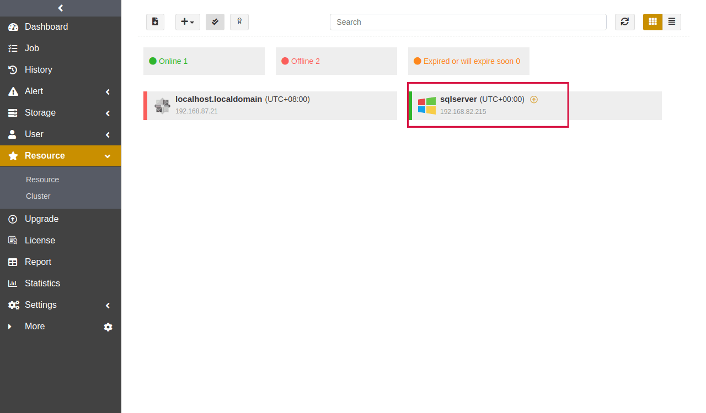
Before You Begin#
Check SQL Server State#
Check the SQL Server service state of the agent. The SQL Server database service should be in the “running” state for the backup and restore.
Windows OS
Linux OS
[root@localhost ~]# systemctl status mssql-server ● mssql-server.service - Microsoft SQL Server Database Engine Loaded: loaded (/usr/lib/systemd/system/mssql-server.service; enabled; vendor preset: disabled) Active: active (running) since Two 2022-05-31 04:55:30 EDT; 5s ago Docs: https://docs.microsoft.com/en-us/sql/linux Main PID: 15804 (sqlservr) CGroup: /system.slice/mssql-server.service └─15804 /opt/mssql/bin/sqlservr 2022-05-31 04:55:30 localhost.localdomain systemd[1]: Started Microsoft SQL Server Database Engine. 2022-05-31 04:55:30 localhost.localdomain systemd[1]: Starting Microsoft SQL Server Database Engine...
Check Resource State#
Log in to the ADPS console as a user with the operator privileges, and open Resource. The host and SQL Server are displayed in “Online” state. If the state is offline, check whether the ADPS Agent service and SQL Server service work normally.
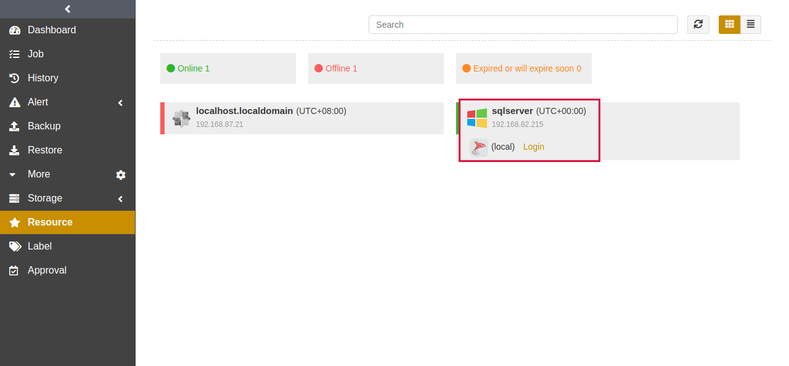
Check Storage Pool#
Log in to the ADPS console as a user with the operator privileges, open Storage Pool, and check whether the operator has been assigned storage pools. If no storage pool is available, contact the administrator to create one and assign permissions to the current operator.

First Time Login#
Before you create the first SQL Server backup and restore, log in to the SQL Server instance first. ADPS supports three authentication methods for SQL Server: database, OS, and access key.
Log in to the ADPS console as a user with the operator privileges.
Open Resource and find the host with SQL Server. Expand the host, and click Login next to the SQL Server instance. The Login window appears.
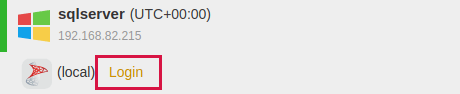
In the Login window, do the following:
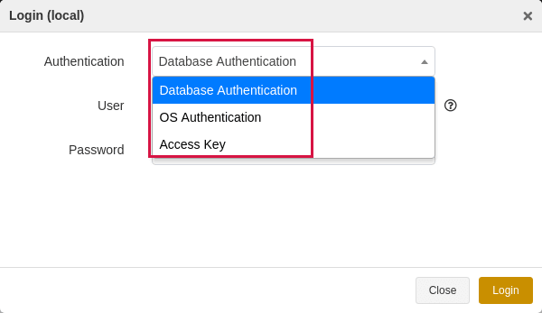
Select Database Authentication from the Authentication list to use SQL Server Authentication. Enter the SQL Server user name and password. Click Login.
To use Database Authentication, the SQL Server user should have the following roles: server roles of sysadmin and dbcreator, database roles of db_backupoperator and db_owner.
If the SQL Server user changes its password, you must re-log in to the instance. Otherwise the job will fail.
Select OS Authentication from the Authentication list to use Windows Authentication. Enter the user name and password of the operating system. Click Login.
To use OS Authentication, the Windows user can be the Administrator or the one who installed the SQL Server.
OS Authentication does not require the password of the SQL Server user. If the SQL Server user changes its password, it will not affect the backup and restore jobs.
Select Access Key from the Authentication list. Enter the access key of the current logged-in user. Click Login.
To get the access key of the user: Click the Personal Settings in the upper right corner, select Account Settings, and in the Preference tab, click View to get the Access Key.
Access Key Authentication is not enabled by default. To enable this feature, log in to the console as a user with the administrator privileges, open Settings, and in the Security tab, enable Access Key Login Instance.
Create Backup Jobs#
This chapter introduces how to back up the SQL Server databases.
Prerequisites#
The agent has been installed. For installation, see Install and Configure Agent.
The license has been activated, and the resource has been authorized to users. For details, see Activate License and Authorize User.
Log in to the ADPS console as a user with the operator privileges and the resource permissions.
Create Full Backup Jobs#
Full backup jobs take database as the backup unit and support the backup of the System databases and User databases.
Open Backup from the sidebar. Select the host and SQL Server instance. Click Next.
Select Full as the backup type and choose the databases that you want to back up. Click Next.
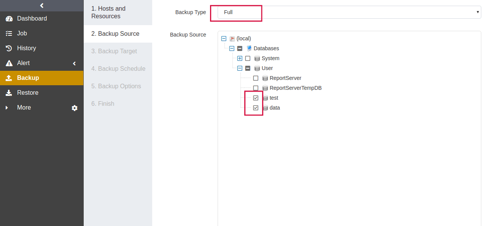
Select a Backup Target. Click Next.
Select a Backup Schedule to set the execution time of the backup job. Click Next.
Set Backup Options including common and advanced options. Click Next.
Common options:
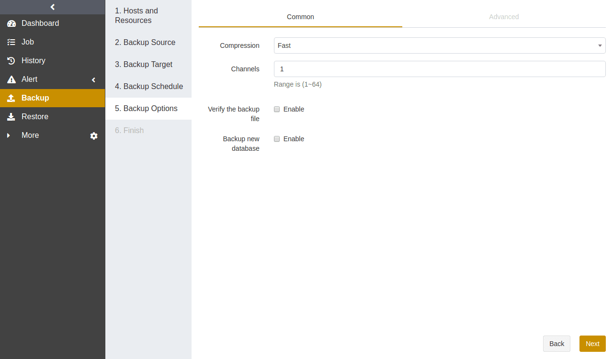
Compression: Fast compression is enabled by default.
None: During the backup, the data will not be compressed.
Tunable: You can customize the compression level. It requires activating the advanced feature of Advanced Compression.
Fast: During the backup, the data will be compressed by fast compression algorithms.
Verify backup files: If you enable this option, RESTORE VERIFYONLY will be used to verify the backup set is intact and available after the backup, but it will not restore the backup set.
Channels: This option can improve backup efficiency. The default value is 1 and the range is 1 to 64. For details, see Channel Number Configuration.
Backup new databases: It is not enabled by default. When enabled, it will check whether the SQL Server instance has new databases before the backup job starts. If so, the new databases will be added to the backup job.
Advanced options:
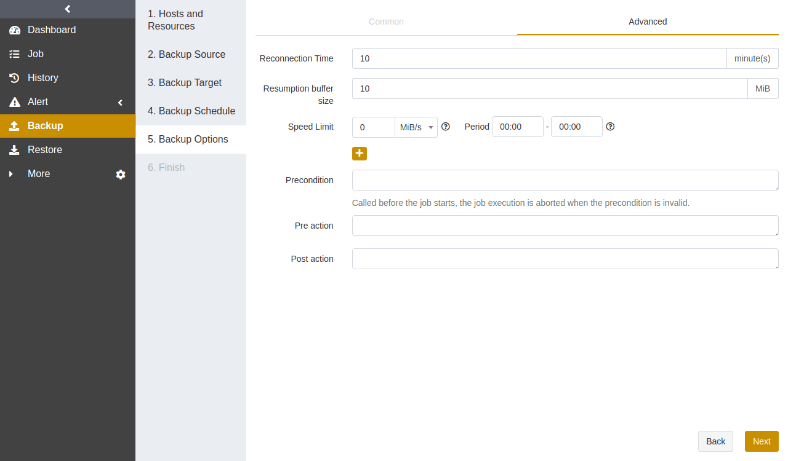
Reconnection time: This option supports 1 to 60 minutes. The job continues after the abnormal reset occurs in the network within the set time.
Speed limit: It can limit data transfer speed or disk read and write speed. The unit is MiB/s.
Precondition: The precondition is checked before the job starts. The job execution is aborted when the precondition is invalid.
Pre/Post action: The pre action is executed after the job starts and before the resource is backed up or restored. The post action is executed after the resource is backed up or restored.
Set a Job Name and confirm the job information. Click Submit.
Create Cumulative Incremental Backup Jobs#
The cumulative incremental backup is created based on a full backup. It only backs up data that has changed since the last full backup.
Creating a cumulative incremental backup is the same as creating a full backup. Select Cumulative Incremental Backup as the backup type and choose databases.
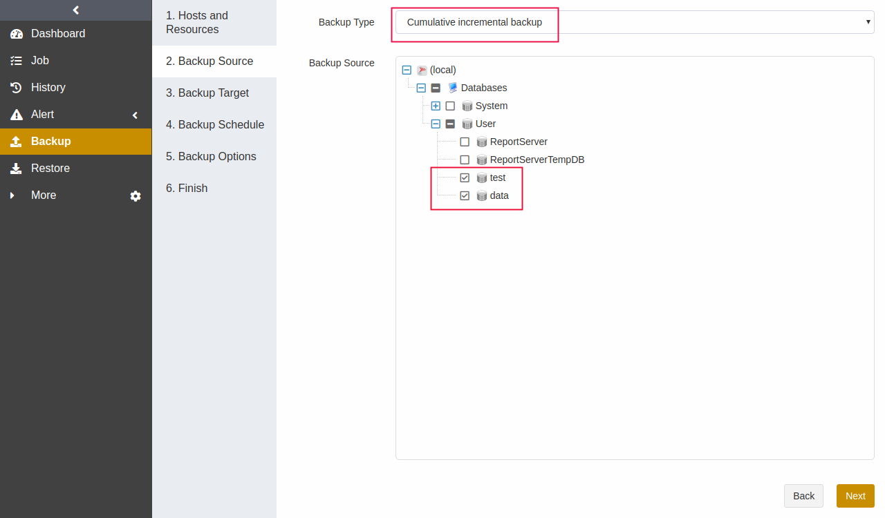
Note:
Master database does not support cumulative incremental backup. It cannot be selected as the backup source.
If the database has not been fully backed up, or has not been fully backed up after the restore, the first cumulative incremental backup will be performed as a full backup by default.
When you switch the backup target of a cumulative incremental backup job to a new storage pool, a full backup should be first performed on the backup source with the new pool as the backup target.
Create Log Backup Jobs#
If your databases use the Full or BULK-LOGGED recovery model, you can back up transaction logs periodically based on full backups or cumulative incremental backups. Transaction log backup saves more time and space than full backup, and will truncate the log after the job is completed to avoid the log fills. When you use transaction logs to recover the database, you can specify a point in time.
Creating a log backup is similar to creating a full backup. Select Log as the backup type and choose databases.
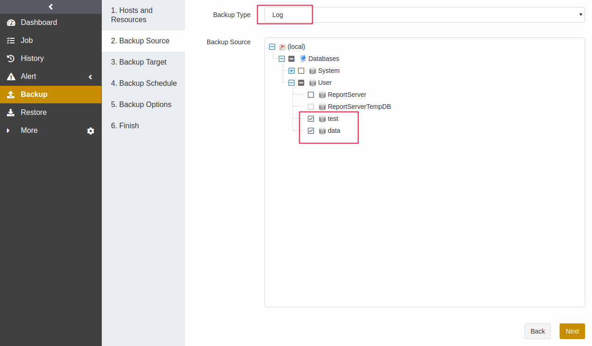
Note:
Log backup is not supported for databases with the SIMPLE recovery model.
If the database has not been fully backed up, or has not been fully backed up after the restore, you should first run a full backup and then a log backup.
When you switch the backup target of a log backup job to a new storage pool, a full backup should be first performed on the backup source with the new pool as the backup target.
Backup Options -> Common provides the Log backup threshold option.
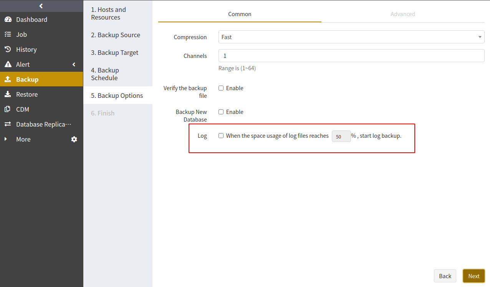
Log backup threshold: This option is not enabled by default. When you enable it, you can set the log space usage threshold. Each time before the running of log backup, the log space usage rate will be checked. Log backup will perform on the databases whose log space usage reaches the threshold.
Note: You will see this option only when selecting hourly, daily, weekly, and monthly backup schedules.
Backup Options -> Advanced provides the Backup tail-log option.
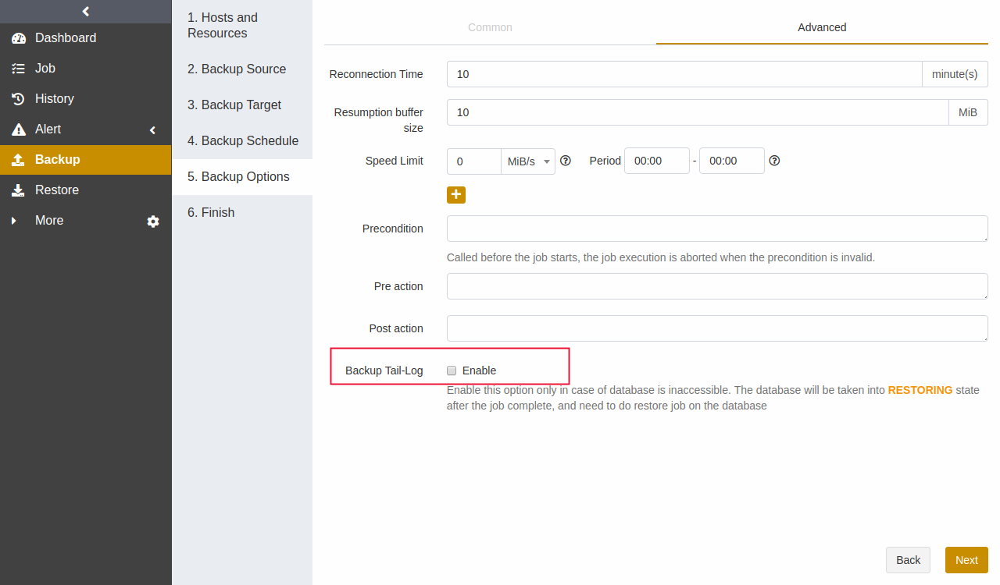
Backup tail-log: When the database is damaged or data files are deleted, you can try to create a log backup first before the restore and enable the Backup tail-log option. It can capture any log records (tail log) that have not been backed up. After the log backup, you can create a job and restore the database to a point in time before the failure.
To perform a successful tail-log backup, consider the following:
The SQL Server instance is running normally under the full or bulk-logged recovery model.
The database state is Online, Recovery, Recovery Pending, and Suspect. The database does not contain any bulk-logged changes.
The database states that do not support tail-log backups are Offline, Restoring, and Emergency.
Backup new databases is not compatible with Backup tail-log. You cannot enable them at the same time.
Create Synthetic Backup Jobs#
The restore of the above three traditional backups will re-covert the backup sets into the source data files of the database, which costs a lot of recovery time. To reduce the time, ADPS also supports Synthetic Backup, a more advanced way to back up SQL Server databases.
Synthetic backup can capture data from the production system through snapshot technology. The first synthetic backup job is a full backup and the subsequent ones are incremental. Each incremental backup is synthesized with the previous backup copy to generate a new one. The copy can be directly mounted to the target database for usage by Instant Recovery without adding physical copies and occupying additional storage space.
Prerequisites for creating a synthetic backup:
The data disk of the storage server requires the ZFS file system. For installation, see Server Requirements.
You need to configure iSCSI/FC between the agent and the storage server.
Your License should have the advanced features of MS SQL Server Synthetic Backup and MS SQL Server Copy Management.
The admin has created and assigned a Database Synthetic Pool to operators.
Creating a synthetic backup is similar to creating a full backup. Select Synthetic Backup as the backup type and choose databases.
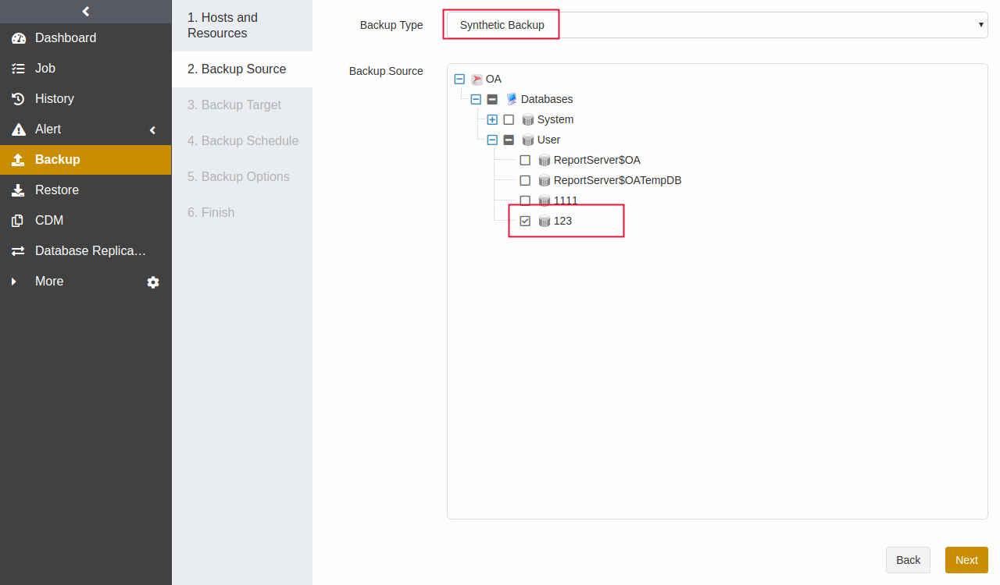
Note:
SQL Server System databases do not support synthetic backup. They cannot be selected as the backup source.
SQL Server synthetic backup supports Windows 2003 and later versions. For databases, it supports SQL Server 2005 and later versions. iSCSI and FC storage types are supported.
Select a Backup Target. The backup target can only be a database synthetic pool. If you cannot find a database synthetic pool, please contact the admin to create one.
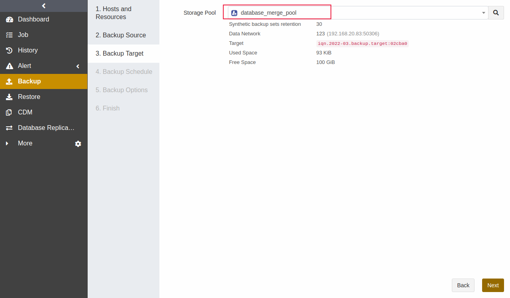
Select a Backup Schedule to set the execution time of the backup job. For details, see Backup Schedule Operation. We recommend running a synthetic backup on a daily basis.
Set Backup Options including common and advanced options. Compared with the traditional backup, the synthetic backup configuration options add Full backup threshold and Shadow copy provider.
Common options:
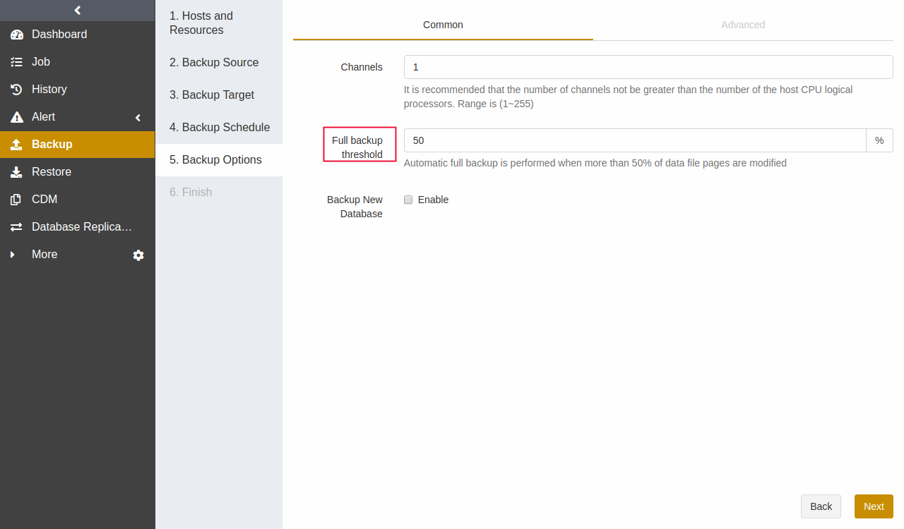
Channels: You can enable this option to improve backup efficiency. The default number is 1 and the range is 1 to 255. For details, please refer to Channel Number Configuration.
Full backup threshold: Before the synthetic backup job run as an incremental backup, the data page changes will be checked. When the data page changes of the database reach the full backup threshold, the synthetic backup job will be performed as a full backup but not an incremental. The full backup threshold is 50 by default. The range is 5 to 100.
Advanced options:
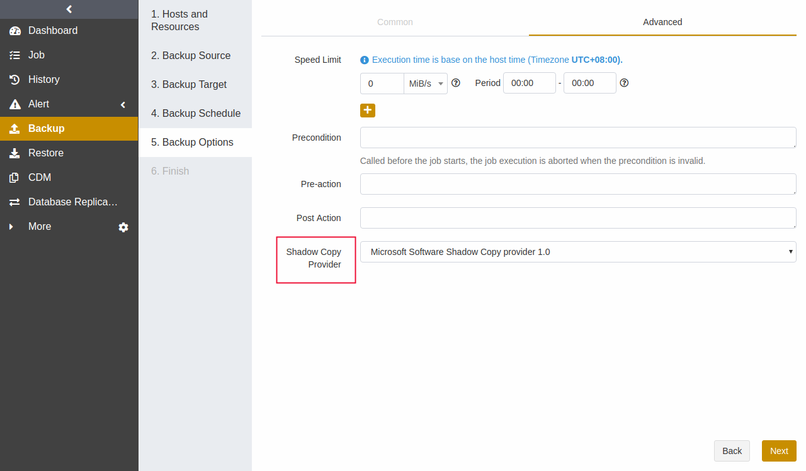
Shadow copy provider: You can specify a shadow copy provider in the agent to perform the synthetic backup job.
Set a Job Name and check whether the job information is correct. Click Submit.
Create Restore Jobs#
This chapter introduces how to restore SQL Server databases. ADPS provides a variety of restore types for different needs, including media restore, timepoint restore, instant recovery, disaster recovery, and recovery testing.
Prerequisites#
You have a completed backup job. See Create Backup Jobs.
To restore to another host, install an agent on that host, activate its license and assign the authorization.
Create Media Restore Jobs#
When a media error occurs in the SQL Server database, such as data file corruption or accidental deletion, you can perform media restore jobs to restore one or more data files to the state of the latest backup set.
Select the host and SQL Server instance. Click Next.
Select Media as the restore type and choose the databases or data files that you want to restore. You can modify the path for restored files. Click Next.
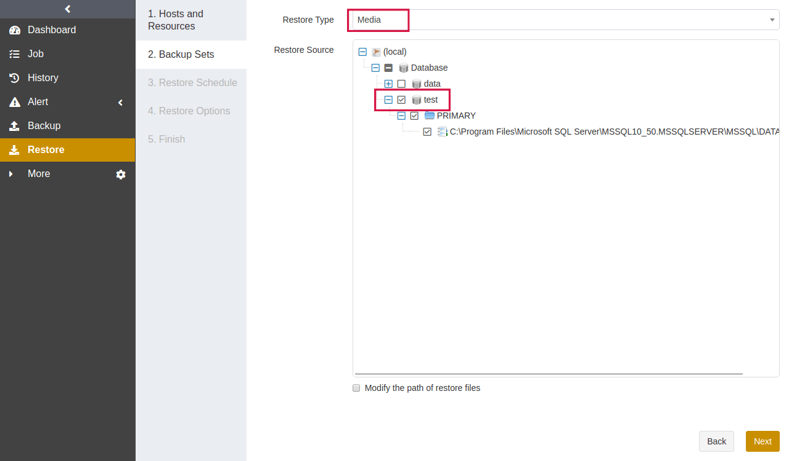
Note:
Media restore can only restore to the source host.
Under the simple recovery model, the file must belong to a read-only filegroup for media restore.
Select a Restore Schedule. Click Next.
Set Restore Options according to your needs including reconnection time, speed limit, pre action, and post action. Click Next.
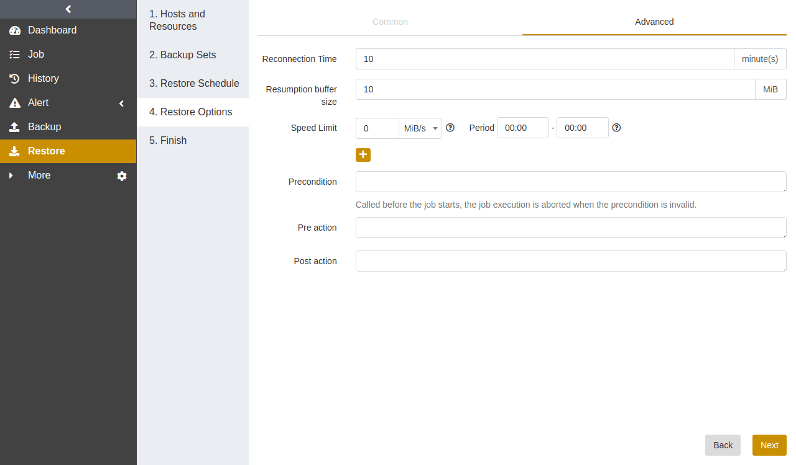
Confirm the job information, click Submit, and wait for the job to be executed.
Create Timepoint Restore Jobs#
When a logical error or disaster occurs in a SQL Server database, you can use Timepoint Restore to restore the database to a specified point-in-time state. Restoring to the source or a different host is supported.
Select the host and SQL Server instance. Click Next.
On the Backup Sets page, do the following:
(1) Select Timepoint Restore as the restore type. Choose a database that you want to restore.
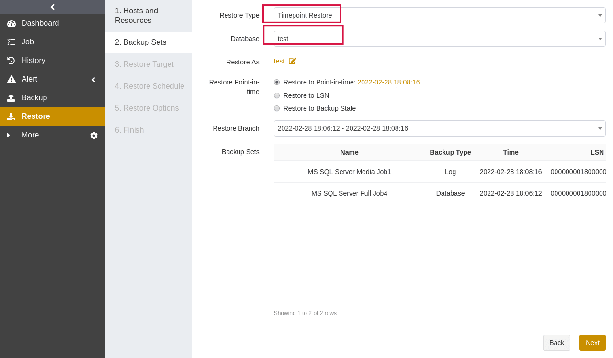
(2) The database will be restored as the original name by default. You can click the Rename icon beside Restore As to specify the restored database name or data file path and name.
(3) Select a restore point in time by the following three methods:
Restore to Point-in-time: If the database has log backups, it will display the latest point in time of the newest backup set by default.
You can click the time beside Restore to Point-in-time. In the pop-up window, drag the slider to specify a point in time for the restore. Click the tick. The restore branch and backup set information of the point in time will appear.
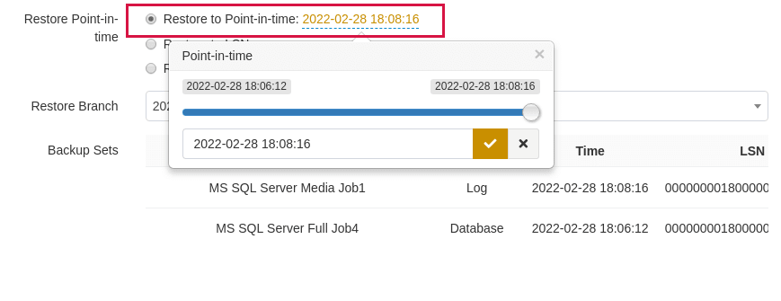
Restore to LSN: If the database has log backups, it will display the latest LSN of the newest backup set by default.
You can click the LSN number beside Restore to LSN. In the pop-up window, enter a specific LSN number for the restore. Click the tick. The restore branch and backup set information of the LSN will appear.
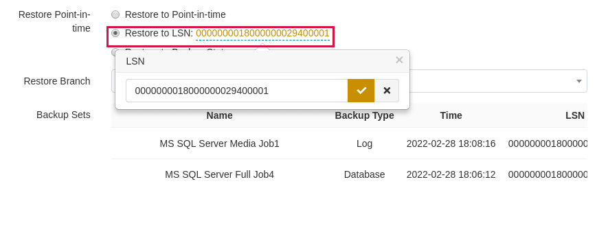
Restore to Backup State: Click this option and the backup set list will appear. It will restore to the backup state of the newest backup set by default.
You can select a backup set from the list and restore to its latest backup state.
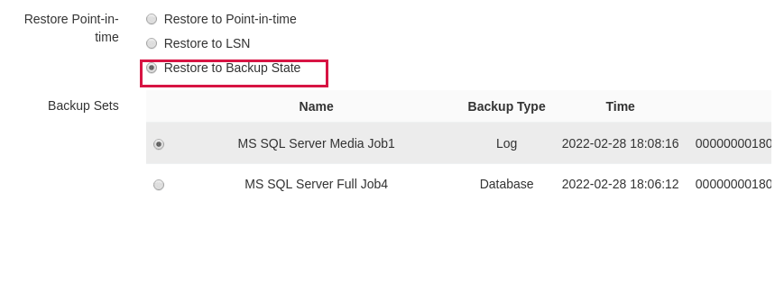
Select a Restore Target. It supports restoring to the source or a different host. Click Next.
Select a Restore Schedule. It supports only immediate and one-time schedule types.
Set Restore Options according to your needs including reconnection time, speed limit, pre action, and post action.
Confirm whether the information is correct and then submit the job.
Create Instant Recovery Jobs#
Disasters may occur in a SQL Server database. If you want the database to be online quickly, you can perform an instant recovery job to create a database copy using the synthetic backup set and mount the copy directly to the agent. The data can be recovered quickly to reduce the recovery time.
Note:
If the storage pool storing synthetic backup sets is of the iSCSI type, you must install the iSCSI Initiator on the agent where you perform the restore job.
If the storage pool storing synthetic backup sets is of the FC type, you must install the HBA API Driver corresponding to the HBA card on the agent where you perform the restore job.
After the instant recovery is completed, the data file path of the database will be redirected to the mounted directory.
If the restore target is a single instance, the mounted directory is under the path C:\ProgramData\aurreum\adps. If the restore target is a failover cluster, the mounted directory is under the shared disk.
ADPS provides the following two portals to create instant recovery jobs: Restore and CDM.
Create from Restore Page#
Open the Restore page. Select the host and SQL Server instance. Click Next.
On the Backup Sets page, do the following:
(1) Select Instant Recovery as the restore type and choose a database.
(2) The database will be restored as the original name by default. You can click the Rename icon beside Restore As to specify the restored database name or data file path and name.
(3) Select a restore point in time by the following three methods: Restore to Point-in-time, Restore to LSN, and Restore to Backup State.
(4) Click Next.
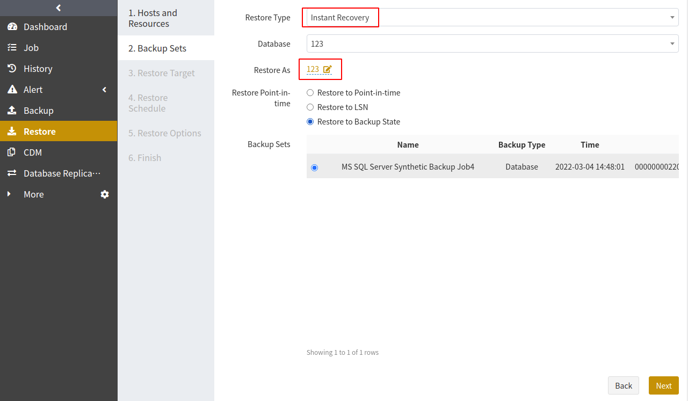
Select a Restore Target. It supports restoring to the source or a different host. Click Next.
Select a Restore Schedule. It supports immediate and one-time schedule types. Click Next.
Set Restore Options according to your needs including precondition and pre/post action. Click Next.
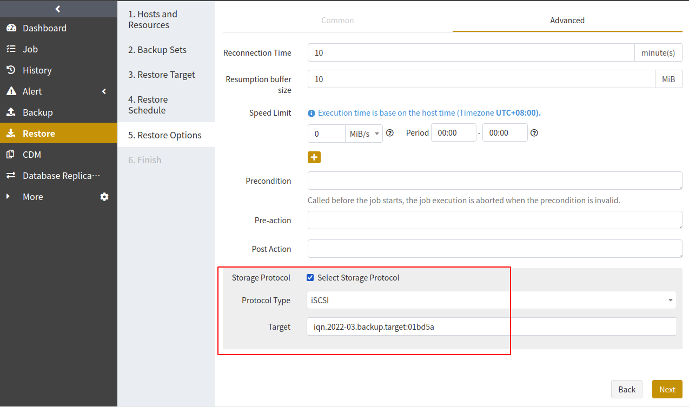
Select storage protocol: When you enable this option, you can select iSCSI or FC storage protocol to restore the synthetic backup set in a database synthetic pool, and set the name for the target. During the instant recovery, the selected storage protocol will be used to transfer data between the storage server and the restore target.
Set Job Name and check whether the job information is correct. Click Submit.
Create from CDM Page#
On the CDM page, you can view data copies generated after the database synthetic backup set finished. You can use the Create Copy icon to create an instant recovery job.
Open CDM and filter out the relevant data copies of SQL Server instances. Select the instance and click the Create Copy icon next to the instance.
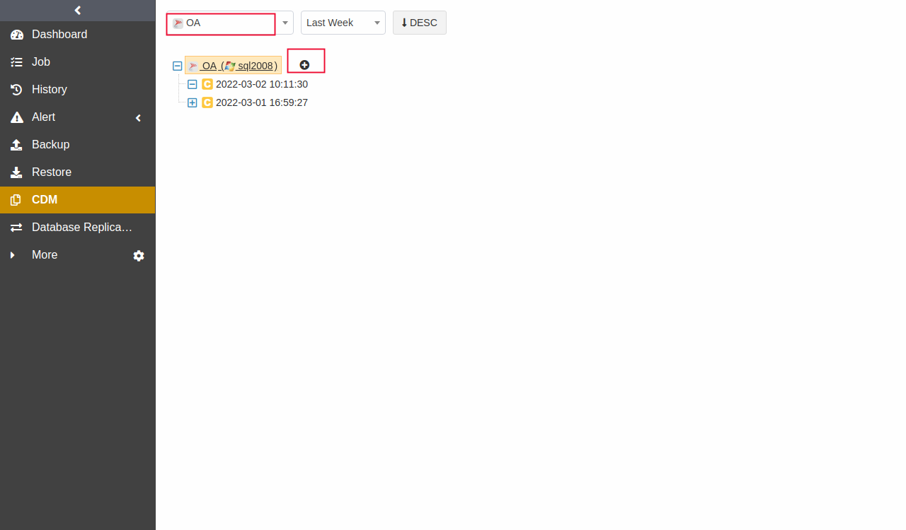
The default restore type is Instant Recovery. Select the database that you want to recover. You can specify the restored database name and data file name through the Rename icon. Instant Recovery supports restoring to a specified point in time, LSN, and backup state. Click Next.
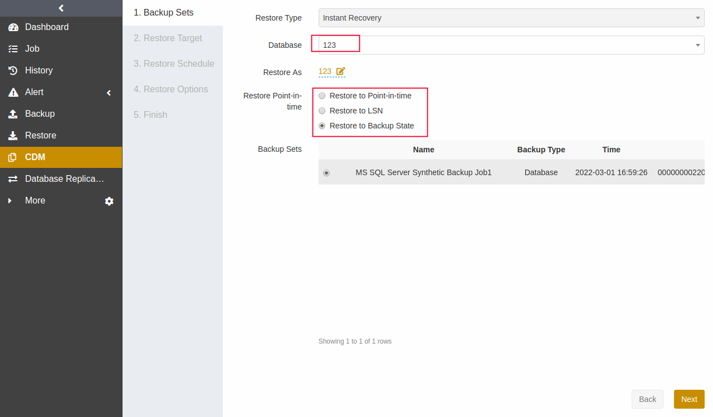
Other operations such as Restore Target, Restore Schedule, and Restore Options are the same as the previous section.
Check Successful Recovery#
After the instant recovery is completed, go to the CDM page. You can find a mounted copy record under the corresponding data copy.
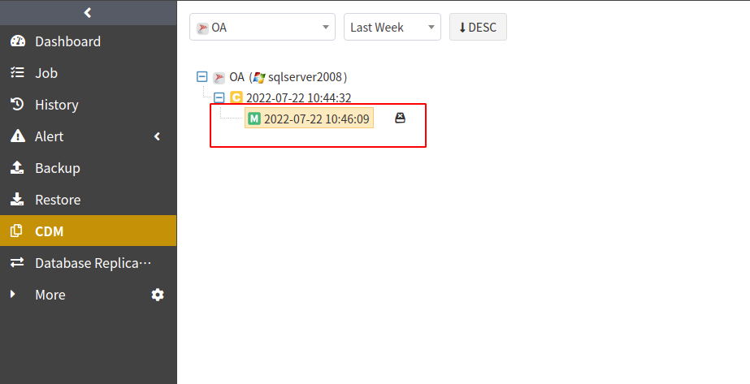
Detach Copy#
You can detach the mounted data copies from the agent using the Detach icon. Note that detaching the copy will lose new data created after mounting and delete the mounted database.
Select a detached copy and click the Detach icon beside the copy record.
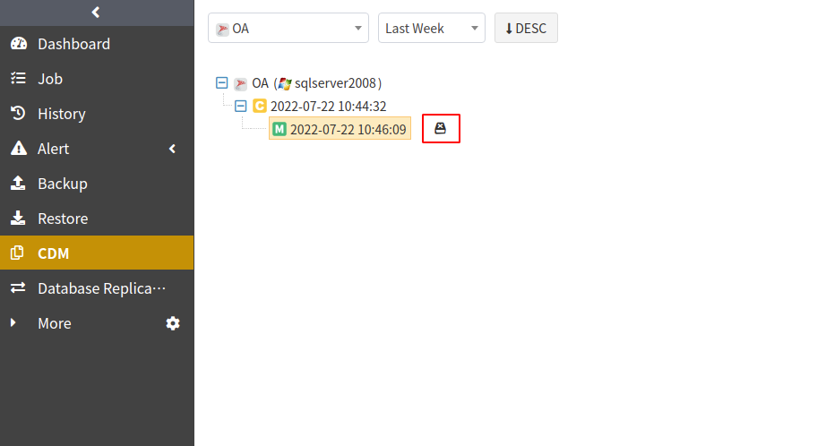
Pay attention to the warning, enter the verification code, and click OK.
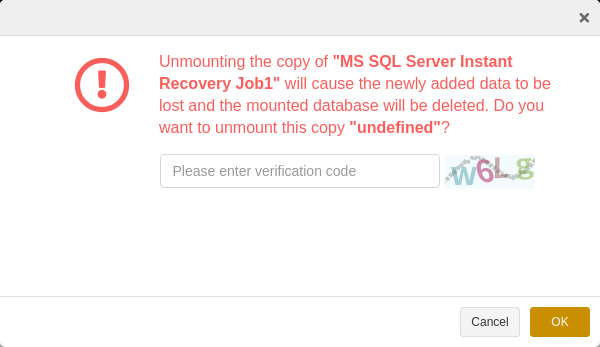
Create Disaster Recovery Jobs#
When a disaster occurs in the SQL Server database, you can create a disaster recovery job to restore one or more databases to the latest state of the newest backup set. You can restore to the source or a different host.
Select the host and SQL Server instance. Click Next.
Select Disaster Recovery and choose databases. You can specify the restored database name through the Rename icon.
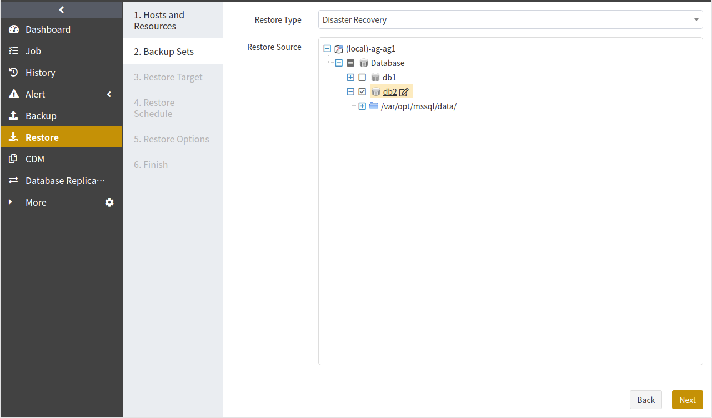
Select a Restore Target. It supports restoring to the source or a different host. Click Next.
Select a Restore Schedule. It supports immediate and one-time schedule types. Click Next.
Set Restore Options according to your needs including reconnection time, speed limit, pre action, and post action. Click Next.
Confirm the job information. Click Submit.
Create Recovery Testing Jobs#
You can restore the latest backup sets of SQL Server to other instances on the source host or a different host hourly, daily, weekly, or monthly.
Select the host and SQL Server instance. Click Next.
Select Recovery Testing and choose databases. You can specify the restored database name through the Rename icon.
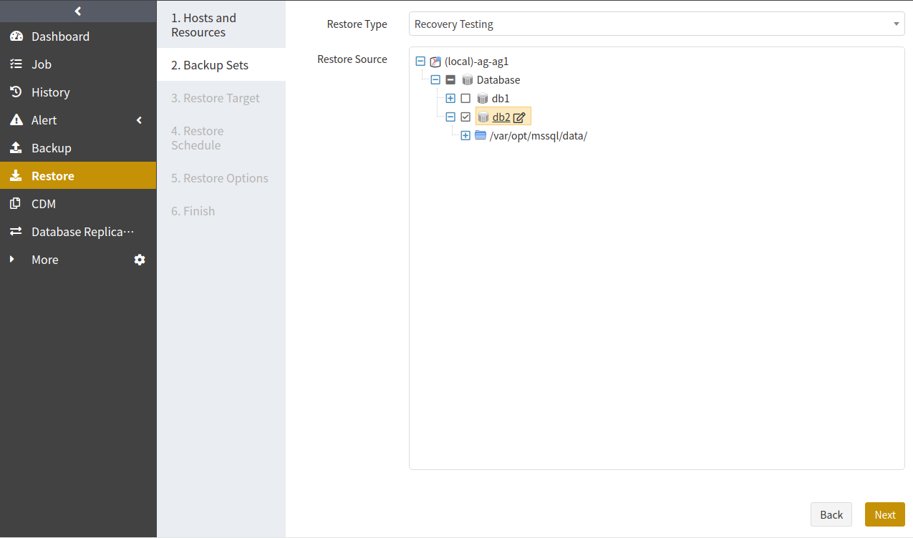
Select a Restore Target. It supports restoring to the source or a different host. Click Next.
Select a Restore Schedule. It supports hourly, daily, weekly, and monthly schedule types. Click Next.
Set Restore Options according to your needs including reconnection time, speed limit, pre action, and post action. Click Next.
Confirm the job information. Click Submit.
Wait for the job to be executed. The job will restore the latest backup sets of the source host.
SQL Server Cluster Backup and Restore#
ADPS supports three types of SQL Server clusters: failover cluster, Always On availability groups, and Always On failover clusters. Before the first backup and restore, you must cluster the SQL Server nodes.
Failover cluster#
Deploy the environment of each node in the cluster according to Install and Configure Agent as well as Activate License and Authorize User.
Cluster Binding#
Go to Resource -> Cluster. Click the Cluster Binding icon.

Customize the cluster name. Select the active node as the Primary Node, Active-Passive as the Type, and the inactive node as the Node. Enter the IP of the Database Cluster Address. Click Submit.
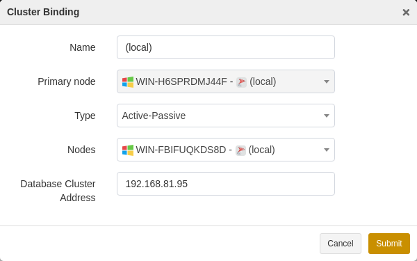
Backup and Restore#
The backup and restore types for SQL Server failover cluster are the same as those for single instance.
When creating a backup job, select the SQL Server of the active node as the backup resource. The remaining steps are similar to Create Backup Jobs.
If a node switch occurs on the SQL Server failover cluster, the new active node will automatically take over the backup job.
Always On Availability Groups#
SQL Server Always On availability groups are called virtual instances. The virtual instance is named: SQL Server instance name-ag-always on availability group name. Deploy the environment of each node according to Install and Configure Agent as well as Activate License and Authorize User. Before activating the virtual instance, log in to the SQL Server instance first.
Cluster Binding#
Go to Resource -> Cluster and click the Cluster Binding icon.
Customize the cluster name. Select the virtual instance of the current primary copy as the Primary Node, Always On Availability Groups as the Type, and the virtual instance of the secondary copy as the Node. Click Submit.
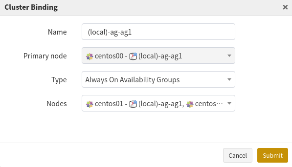
Backup and Restore#
The backup and restore types of SQL Server Always On availability groups are the same as those for single instance.
When creating a backup job, select a virtual instance as the backup resource. The remaining steps are similar to those in Create Backup Jobs.
Always On Failover Cluster#
Cluster Binding#
Go to Resource -> Cluster and click the Cluster Binding icon.
Select Active-Passive to bind SQL Server instances. Then log in to the instances on the Resource page.
Activate virtual instances. See Install and Configure Agent as well as Activate License and Authorize User.
Select Always On Availability Groups to bind virtual instances. Then log in to the virtual instances on the Resource page.
Backup and Restore#
The backup and restore types for SQL Server Always On failover cluster are the same as those for single instance.
When creating a backup job, select a virtual instance as the backup resource. The remaining steps are similar to those in Create Backup Jobs.
Always On Failover Cluster#
Cluster Binding#
Go to Resource -> Cluster and click Cluster Binding icon.
Select Active-Passive to bind the physical instances. After that, log in to the physical instances on the Resource page.
Activate virtual instances. See Install and Configure Agent as well as Activate License and Authorize User.
Select Always On Availability Groups to bind virtual instances. After that, log in to the virtual instances on the Resource page.
Backup and Restore#
The backup and restore types for Always On failover clusters are the same as those for single instance.
When creating a backup job, select a virtual instance as the backup resource. The remaining steps are basically similar to those in Create Backup Jobs.
Manage Jobs#
On the Job interface, you can view the backup and restore job information of all agents, start, modify, clone, and delete the jobs.
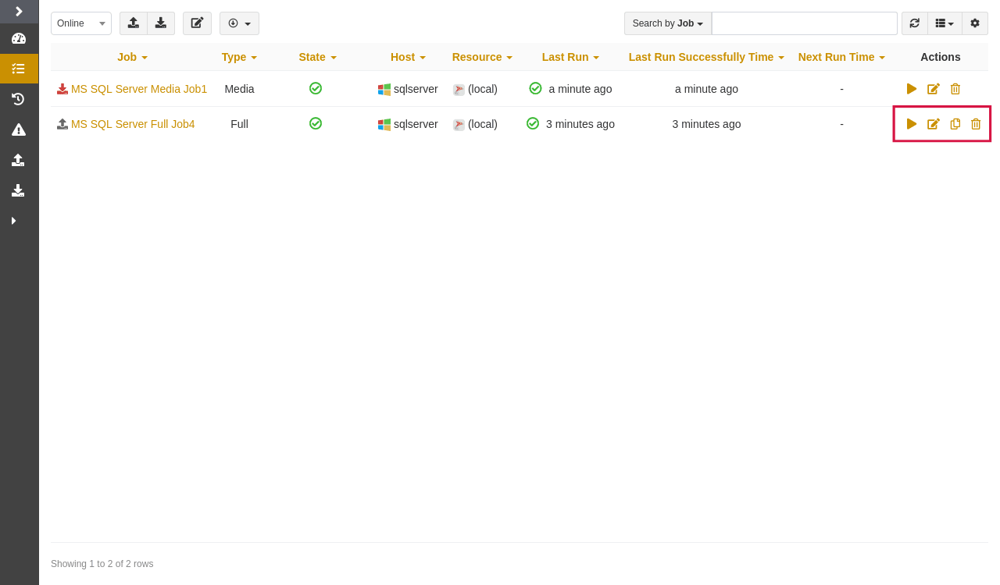
Start: Click to start the job immediately.
Modify: Click
 to modify the basic job information, backup/restore schedule, and backup/restore options.
to modify the basic job information, backup/restore schedule, and backup/restore options.Clone: Click
 to create multiple similar backup jobs.
to create multiple similar backup jobs.Delete: Click to access the confirmation window. Click OK to delete the job.
Backup Protection Strategy#
Backup Schedule Operation#
ADPS provides 6 types of backup schedules. The schedule type selected is only valid for the currently created job.

Immediate: The job immediately starts to run after it is submitted.
One time: After the job is created, it will be in an idle state and start to run when the specified Start time is reached.
Hourly: After the job is created, the first run will be initiated at the specified Start Time. The next run will be executed after a specified number of hours/minutes within the time range according to the setting. If the unit is Hour, then you can set the value from 1 to 24. If you select the Minute as the unit, then you can set the value from 1 to 60.
Daily: After the job is created, the first run will be initiated at the specified Start Time. The next run will be executed after a specified number of days according to the setting. The value is an integer between 1 and 5.
Weekly: After the job is created, the first run will be initiated at the specified Start Time. The next run will be executed after a specified number of weeks according to the setting. You can specify which day of the week to run the job.
Monthly: The job runs on the specified days of some months at the specified time. For example, you can set the job to run on January 1 and June 1 at 20:00. Or you can set it to run on the first Monday of every month at 20:00.
Example: Perform the job every two weeks on Friday at 18:00
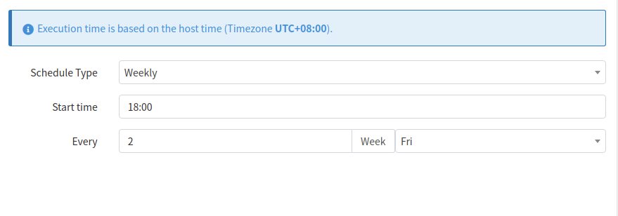
The actual execution time will be:
If the current time is Friday at 17:00, the execution time will be Friday at 18:00 (the current day).
If the current time is Thursday at 17:00, the execution time will be Friday at 18:00 (the next day).
If the current time is Saturday at 17:00, the execution time will be next Friday at 18:00.
After the first run is completed, the job will start automatically at 18:00 on Friday every two weeks.
Backup Strategy Advice#
There are four SQL Server backup types: full backup, cumulative incremental backup, log backup, and synthetic backup. You can add cumulative incremental backups or log backups based on full backups to save more storage space and backup time and realize the recovery to a specified point in time. You can also add log backups based on synthetic backups to realize the instant recovery to a specified point in time. It is recommended to formulate the following backup strategy according to different situations such as network bandwidth, business data volume, security requirements, and the amount of data loss that you can tolerate.
When the application traffic is relatively small, run a Full Backup once a week to ensure that you have an RTO of every week.
After that, you can run a Cumulative Incremental Backup every day to reduce the backup time and ensure that you have an RPO of every day.
If the database supports log backup, you can run a Log Backup every few hours to ensure that the RPO can reach the second level. For example, you can run a log backup every 2 hours.
Avoid using the following strategies:
Perform only full backups.
Perform a full backup followed by all cumulative incremental or log backups.
Channel Number Configuration#
Channel number for backup jobs
SQL Server physical backups support up to 64 channels and synthetic backup supports up to 255 channels. You can set the number of channels for backup and restore jobs according to the actual environment. A reasonable number can improve job performance. The number of channels is generally recommended to be the same as that of CPU cores. The efficiency improvement will not be obvious if the number of channels exceeds that of CPU cores.
Channel number for restore jobs
The channel number for a restore job is the same as that for the backup job. The Restore page does not provide the Channel option by default.
Limitations#
Function |
Limitations |
|---|---|
Backup |
Before using ADPS to back up SQL Server, you need to close the backup jobs of SQL Server itself and other third-party backup providers. |
Synthetic backup |
You need to install Microsoft iSCSI Software Initiator on the Windows 2003 agent. |
Media restore |
SQL Server 2000 only supports offline restore. SQL Server 2005 and later Enterprise Editions support online restore. |
Instant recovery |
Instant recovery does not support restoring multiple databases in one job currently. |
Always On availability groups |
The databases in availability groups must be with the full recovery model. Therefore, when a virtual instance is selected as the restore target, the database with the simple or bulk-logged recovery model cannot be restored to the target. |
Authentication method |
Neither SQL Server on Linux nor Always On availability groups on Linux support OS Authentication. |
Glossary#
Term |
Description |
|---|---|
Fast compression |
Compress data during backup using fast compression algorithms. |
Log truncation |
Log truncation can remove inactive virtual log files from the logical transaction logs in a SQL Server database to free up space in the logical logs for reuse by the physical transaction logs. |
Failover cluster |
Only one host is allowed to mount the shared disk, while the other is closed. When the active node fails, the inactive node will become the active node and mount the shared disk. |
Always On availability groups |
Under synchronous-commit mode, the data of the primary copy is updated to the secondary copy synchronously. Real-time synchronization can be maintained between the primary copy and the secondary copy. When the system detects the failure of the primary copy, the secondary copy will immediately become the new primary. |
Snapshot |
A database snapshot is a read-only static view of a SQL Server database (source database). |